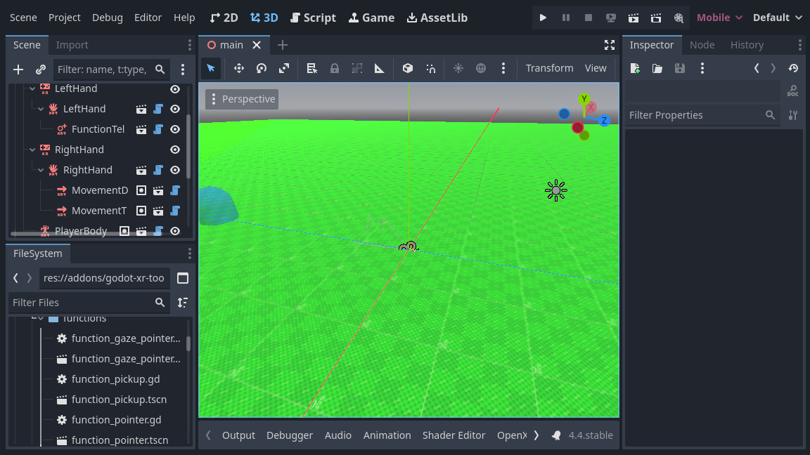

Di chuyển cơ bản trong XR
Với di chuyển cơ bản, chúng ta sẽ tiếp tục dùng thư viện Godot XR Tools. Thư viện này có cả các tính năng di chuyển cơ bản lẫn nâng cao.
Thêm thân người chơi
Bước đầu tiên là thêm một node hỗ trợ vào node XROrigin3D. Vì XR hỗ trợ theo dõi roomscale, bạn không thể đơn giản thêm thiết lập XR vào một node CharacterBody3D và mong mọi thứ hoạt động. Bạn sẽ gặp rắc rối khi người dùng di chuyển trong không gian thật và không còn đứng ở giữa phòng. Godot XR Tools tích hợp logic cần thiết vào một node hỗ trợ tên là PlayerBody.
Chọn node XROrigin3D và nhấn nút để thêm một scene con. Chọn addons/godot-xr-tools/player/player_body.tscn và thêm node này.
Thêm sàn
Node này điều khiển chuyển động trong game của nhân vật và sẽ phản ứng ngay với trọng lực. Vì vậy, để người chơi không rơi mãi mãi, chúng ta sẽ nhanh chóng thêm một sàn nhà vào scene.
Chúng ta bắt đầu bằng cách thêm một node StaticBody3D vào node gốc và đổi tên thành Floor. Chúng ta thêm một node MeshInstance3D làm node con của Floor. Sau đó tạo một PlaneMesh mới làm mesh cho nó. Tạm thời, chúng ta đặt kích thước mesh là 100 x 100 mét. Tiếp theo, thêm một node CollisionShape3D làm node con của Floor. Sau đó tạo một BoxShape làm shape. Chúng ta đặt kích thước box shape này là 100 x 1 x 100 mét. Chúng ta cũng cần dịch collision shape xuống 0,5 mét để mặt trên của hộp nằm ngang bằng với sàn.
Để dễ thấy rằng chúng ta thực sự đang di chuyển trong thế giới, một sàn trắng trơn là không đủ. Hãy tạo một texture bằng công cụ tạo texture miễn phí tuyệt vời của Wahooney. Khi đã tạo xong texture, hãy thêm nó vào dự án. Sau đó tạo một material mới cho node MeshInstance3D, thêm texture làm albedo và bật Triplanar trong mục UV1 của thuộc tính material.

Di chuyển trực tiếp
Chúng ta sẽ bắt đầu thêm một số chuyển động trực tiếp cơ bản vào thiết lập. Điều này cho phép người dùng di chuyển trong thế giới ảo bằng đầu vào joystick.
Ghi chú
Cần lưu ý rằng việc di chuyển trong thế giới ảo trong khi người chơi đứng yên ngoài đời thực có thể gây buồn nôn, đặc biệt với người chơi mới làm quen với VR. Cài đặt mặc định của các hàm di chuyển khá thận trọng. Chúng tôi khuyên bạn nên giữ các giá trị mặc định này, nhưng cung cấp tùy chọn trong game để bật các cài đặt kém thoải mái hơn cho người chơi có kinh nghiệm đã quen chơi game VR.
Chúng ta muốn bật tính năng này trên controller tay phải. Chúng ta làm điều đó bằng cách thêm một subscene vào node XRController3D của tay phải. Chọn addons/godot-xr-tools/functions/movement_direct.tscn làm scene cần thêm.
Hàm này thêm chuyển động tiến và lùi cho người chơi bằng joystick trên controller tay phải. Nó có tùy chọn để thêm cả di chuyển ngang trái/phải (strafe), nhưng mặc định tùy chọn này bị tắt.
Thay vào đó, chúng ta sẽ thêm khả năng cho người chơi xoay người bằng joystick này. Chúng ta sẽ thêm một subscene khác vào node controller, chọn addons/godot-xr-tools/functions/movement_turn.tscn cho việc này.
Mặc định, hệ thống xoay dùng cách xoay theo nấc (snap turn). Điều này có nghĩa là việc xoay diễn ra theo từng bước. Cách này có vẻ hơi giật, nhưng đây là phương pháp đã được kiểm chứng để chống say chuyển động. Bạn có thể dễ dàng chuyển sang chế độ xoay mượt bằng cách thay đổi thuộc tính mode trên node xoay.
Nếu chạy game vào lúc này, bạn sẽ thấy mình có thể di chuyển tự do trong thế giới bằng joystick tay phải.
Dịch chuyển tức thời (teleport)
Một lựa chọn thay thế cho chuyển động trực tiếp mà một số người dùng thấy dễ chịu hơn là khả năng dịch chuyển tức thời đến vị trí khác trong thế giới game. Godot XR Tools hỗ trợ điều này qua hàm teleport, và chúng ta sẽ thêm nó vào controller tay trái.
Thêm một scene con mới vào node XRController3D của tay trái bằng cách chọn scene addons/godot-xr-tools/functions/function_teleport.tscn.
Khi đã thêm scene này, người chơi có thể dịch chuyển khắp thế giới bằng cách nhấn cò trên controller tay trái, chỉ vào nơi muốn đến rồi thả cò. Người chơi cũng có thể điều chỉnh hướng bằng joystick của controller tay trái.
Nếu bạn đã làm đúng mọi hướng dẫn, scene của bạn giờ sẽ trông giống như thế này:

Các tính năng di chuyển nâng cao hơn
Godot XR Tools bổ sung nhiều tính năng di chuyển khác như lượn, móc kéo (grapple hook), jetpack, cơ chế leo trèo, v.v.
Hầu hết hoạt động tương tự các tính năng di chuyển cơ bản mà chúng ta đã xử lý, chỉ cần thêm subscene tương ứng từ plugin vào controller sẽ dùng tính năng đó.
Chúng ta sẽ xem chi tiết hơn một số tính năng này ở phần sau của bài hướng dẫn, ở những chỗ cần thiết lập thêm (chẳng hạn như leo trèo); với các tính năng khác, vui lòng xem các trang trợ giúp riêng của Godot XR Tools để biết chi tiết.